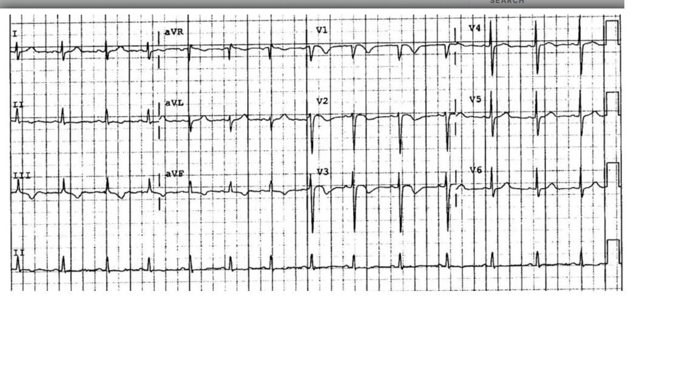
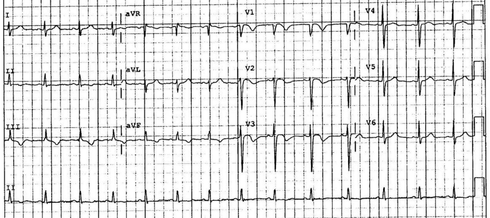
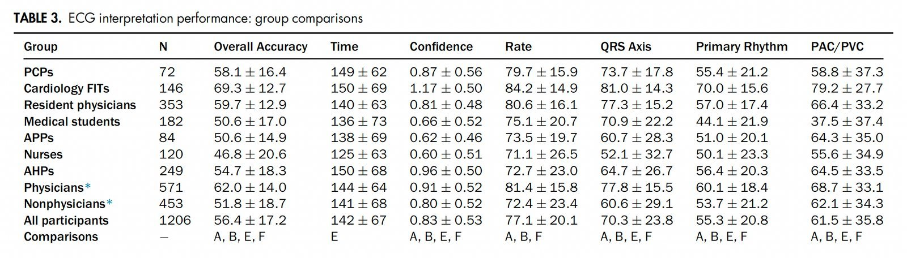
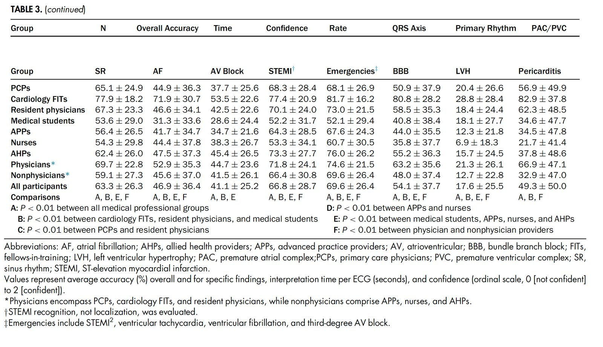
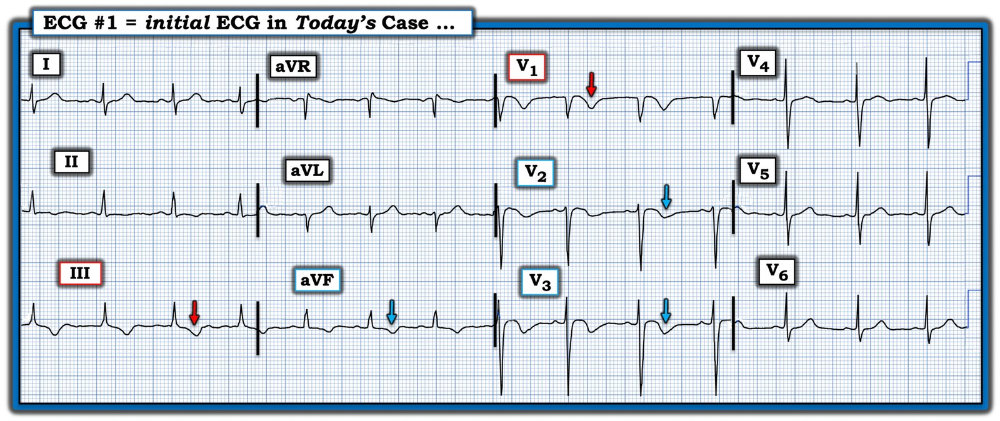

23/09/2025 — Đọc điện tâm đồ có thể giúp bạn tránh khỏi phòng xử án. Và bản thân “nhiễm virus” không phải là lời giải thích cho khó thở
Bản dịch tiếng Việt của bài "ECG interpretation can keep you out of the courtroom. And “viral infection” by itself is not an explanation for dyspnea" – Dr. Smith’s ECG Blog. Giữ nguyên toàn bộ 4 hình ảnh của bản gốc.


Ca này do Eric Funk của bản tin Expert Witness Newsletter gửi đến
https://expertwitness.substack.com/p/death-after-ed-visit-for-covid (Tử vong sau lần khám tại khoa cấp cứu vì COVID)
Một sinh viên đại học 21 tuổi đến khoa cấp cứu (ED) vì ho, đau ngực và khó thở. Bệnh nhân đã biết mắc COVID.
Nhiệt độ 36.3, mạch 84, nhịp thở 16, huyết áp 134/86 và SpO2 = 97%. Bệnh nhân “trông khỏe mạnh”.
Một điện tâm đồ được ghi:


Bạn nghĩ gì?
Điện tâm đồ này được gửi tới nhóm “EKG Nerdz” của chúng tôi mà không kèm bất kỳ thông tin lâm sàng nào, và tất cả chúng tôi đều nói “Thuyên tắc phổi”. Nó có giá trị chẩn đoán PE. ST chênh lên “dạng vòm”, sóng T đảo ngược ở V1-V3 VÀ ở chuyển đạo III.
Bài viết này cho bạn biết lý do và so sánh sóng T đảo ngược của hội chứng Wellens với sóng T đảo ngược của PE: A crashing patient with an abnormal ECG that you must recognize (Một bệnh nhân đang suy sụp nhanh với điện tâm đồ bất thường mà bạn phải nhận ra)
Một bài viết hay khác, có link tới nhiều ca PE:
Another deadly triage ECG missed, and the waiting patient leaves before being seen. What is this nearly pathognomonic ECG? (Thêm một điện tâm đồ lúc phân loại chết người bị bỏ sót, và bệnh nhân đang chờ bỏ về trước khi được khám. Điện tâm đồ gần như đặc hiệu bệnh này là gì?)
Dưới đây là rất nhiều thông tin:
- Về D-dimer, kể cả trong Covid
- Cái nào nhạy hơn với PE, D-dimer hay CT?
- Khó thở và nhiễm virus
- Tại sao chúng ta không có bác sĩ chuyên về điện tâm đồ?
Ca bệnh tiếp diễn:
X-quang ngực âm tính. Điện tâm đồ được đọc là “sóng T không đặc hiệu” ( nghi rằng đây là sự xác nhận lại kết quả đọc bằng máy tính thông thường).
Phần ghi chú dài về cơ bản nói rằng không có bệnh lý nghiêm trọng nào đang diễn ra.
Bệnh nhân được cho xuất viện.
Bình luận: Ngay cả khi bạn bỏ sót điện tâm đồ này, bạn cũng không nên bỏ sót chẩn đoán. Không một bệnh nhân khó thở nào nên được cho xuất viện mà không có một chẩn đoán giải thích được triệu chứng. Nhiễm virus KHÔNG phải là lời giải thích cho khó thở. Nhiễm virus gây khó thở nếu nó gây viêm phổi hoặc co thắt phế quản. Nếu bạn nghĩ đó là co thắt phế quản, ít nhất bạn cần xác nhận điều đó bằng đo lưu lượng đỉnh, rồi khí dung albuterol, rồi đo lại lưu lượng đỉnh. Bệnh nhân phải có lưu lượng đỉnh thấp hơn giá trị dự đoán và, sau albuterol, khó thở của bệnh nhân phải hết và lưu lượng đỉnh phải cải thiện. Nếu tất cả những điều này không xảy ra, thì bạn CHƯA giải thích được khó thở và bệnh nhân cần được khảo sát thuyên tắc phổi hoặc suy tim, hoặc có thể một viêm phổi chỉ thấy được trên CT hoặc siêu âm. Hơn nữa, bạn nên siêu âm tim.
D-dimer đang bị sử dụng chưa đúng mức trong chẩn đoán thuyên tắc phổi. Và D-dimer vẫn hữu ích ở bệnh nhân Covid.
Câu hỏi cho bạn: Cái nào nhạy hơn với thuyên tắc phổi, chụp CT mạch phổi (CTPA) hay D-dimer (ở ngưỡng 500 ng/mL)?
Trả lời: D-dimer.
Nguồn: Open Evidence: https://www.openevidence.com/ask/73627608-e6d8-4232-88e3-c8796d87f5b8
“D-dimer nhạy hơn chụp cắt lớp vi tính (CT) trong phát hiện thuyên tắc phổi (PE). Các phân tích gộp và tổng quan hệ thống cho thấy các xét nghiệm D-dimer độ nhạy cao có độ nhạy gộp khoảng 97% (KTC 95%, 96–98%), trong khi chụp CT mạch phổi (CTPA) có độ nhạy gộp khoảng 94% (KTC 95%, 0.89–0.97) để phát hiện PE.[1-2] Điều này có nghĩa là D-dimer ít có khả năng bỏ sót các ca PE hơn, nhưng nó kém đặc hiệu hơn nhiều so với CT, dẫn đến nhiều dương tính giả hơn và cần chẩn đoán hình ảnh xác nhận trong nhiều trường hợp.”
“Trường Đại học Bác sĩ Hoa Kỳ (American College of Physicians), trong hướng dẫn lâm sàng của mình, khuyến cáo D-dimer là xét nghiệm ban đầu để loại trừ PE ở bệnh nhân có xác suất tiền nghiệm thấp hoặc trung bình, nhờ độ nhạy cao của nó.[3] CT được dành cho bệnh nhân có D-dimer dương tính hoặc nghi ngờ lâm sàng cao, vì nó có độ đặc hiệu cao và có thể xác nhận chẩn đoán cũng như xác định các nguyên nhân khác gây ra triệu chứng”.[2]
“Tóm lại, D-dimer nhạy hơn chụp cắt lớp vi tính trong phát hiện thuyên tắc phổi, nhưng CT đặc hiệu hơn và là bắt buộc để chẩn đoán xác định”.[1-3]
Tóm lại: đọc điện tâm đồ ở trình độ chuyên gia hẳn đã đưa ra được chẩn đoán, nhưng một bác sĩ lâm sàng giỏi chưa từng dành 35 năm nghiên cứu điện tâm đồ cũng vậy.
Theo dõi:
Bệnh nhân về nhà. Trong tuần tiếp theo, bệnh nhân tiếp tục có triệu chứng. Một tuần sau lần khám tại khoa cấp cứu, bệnh nhân bị một cơn ngất khi đang chạy lên cầu thang. Đội cấp cứu ngoài viện (EMS) được gọi đến nhưng bệnh nhân từ chối được chuyển tới bệnh viện. Về sau, bạn bè của bệnh nhân khẳng định rằng đội EMS đã nói với bệnh nhân rằng anh sẽ ổn và gây áp lực để anh ký vào mẫu đơn từ chối.
6 ngày sau lần EMS đến, bệnh nhân bị ngừng tim.
EMS đạt được tái lập tuần hoàn tự nhiên (ROSC) và bệnh nhân được đưa đến khoa cấp cứu.
Bệnh nhân được chẩn đoán thuyên tắc phổi diện rộng và nhập đơn vị hồi sức tích cực (ICU).
Chức năng thần kinh không hồi phục.
Bệnh nhân tử vong 5 ngày sau cơn ngừng tim.
Cha mẹ bệnh nhân đã đệ đơn kiện bác sĩ khoa cấp cứu và bệnh viện. Họ không kiện cơ sở khám cấp cứu ban đầu (urgent care) cũng như dịch vụ EMS.
Nhiều nhân chứng chuyên môn đã được thuê, bao gồm các chuyên gia cấp cứu, tim mạch và huyết học.
Bản báo cáo chuyên môn bằng văn bản duy nhất có trong hồ sơ tòa án là của một bác sĩ huyết học phía bị đơn.
Vụ kiện 10 triệu đô la đã thắng.
Những điểm cần học:
- Nhiễm virus KHÔNG phải là lời giải thích cho khó thở.
- Hãy học đọc điện tâm đồ.
- Mô hình AI PMCardio Queen of Hearts sẽ được huấn luyện để nhận ra hình ảnh điện tâm đồ này. Hãy đón chờ.
Cuối cùng: Tại sao chúng ta không có bác sĩ chuyên khoa điện tâm đồ?
Chúng ta có bác sĩ chẩn đoán hình ảnh để đọc phim X-quang, CT và siêu âm chính quy.
Chúng ta có các chương trình đào tạo chuyên sâu (fellowship) về siêu âm để học siêu âm trong Y học Cấp cứu.
Tại sao chúng ta không có chương trình đào tạo chuyên sâu về điện tâm đồ hay bác sĩ chuyên khoa điện tâm đồ? Điện tâm đồ khó hơn siêu âm rất nhiều, và quan trọng hơn cho các quyết định tức thời so với việc học siêu âm vùng chậu, siêu âm túi mật hay siêu âm viêm ruột thừa, v.v. Những thứ đó đều hay, nhưng bạn không CẦN chúng. Bạn có thể gửi bệnh nhân đi siêu âm do bác sĩ chẩn đoán hình ảnh thực hiện, v.v.
(Hiển nhiên, siêu âm tại giường ở bệnh nhân nặng là cực kỳ quan trọng — tôi không tính điều đó vào đây)
Nhưng khi nói đến điện tâm đồ, bạn chỉ có một mình. Một phần là vì các bác sĩ đánh giá quá cao kỹ năng đọc điện tâm đồ của mình. Vì vậy họ không nghĩ mình cần trợ giúp.
Nhưng trên thực tế, các bác sĩ đọc điện tâm đồ rất tệ.
Anthony Kashou đã chỉ ra rằng các bác sĩ đọc điện tâm đồ rất tệ:
Kashou AH, Noseworthy PA, Beckman TJ, và cs. ECG Interpretation Proficiency of Healthcare Professionals (Năng lực đọc điện tâm đồ của nhân viên y tế). Curr Probl Cardiol [Internet] 2023;101924. Truy cập tại: http://dx.doi.org/10.1016/j.cpcardiol.2023.101924
“Trong số 1206 người tham gia, có 72 (6%) bác sĩ chăm sóc ban đầu (PCP), 146 (12%) bác sĩ đang đào tạo chuyên sâu tim mạch (FIT), 353 (29%) bác sĩ nội trú, 182 (15%) sinh viên y khoa, 84 (7%) nhân viên hành nghề nâng cao (APP), 120 (10%) điều dưỡng, và 249 (21%) nhân viên y tế liên ngành (AHP). Nhìn chung, người tham gia đạt độ chính xác tổng thể trung bình 56.4% ± 17.2%, thời gian đọc 142 ± 67 giây, và mức độ tự tin 0.83 ± 0.53.”




======================================
BÌNH LUẬN CỦA TÔI, bởi KEN GRAUER, MD (23/9/2025):
Ca hôm nay khiến tôi bực bội khi đọc — nhưng lại cực kỳ quan trọng để các bác sĩ lâm sàng biết. Tôi không tham gia nhóm “EKG Nerdz” mà bác sĩ Smith nhắc tới trong phần bàn luận của ông — nhưng nhận định tôi đưa ra chỉ trong vài giây khi nhìn điện tâm đồ hôm nay giống hệt nhận định của các đồng nghiệp đam mê điện tâm đồ của tôi = PE cấp cho đến khi chứng minh được điều ngược lại.
Điểm #1: Rất khó kiểm soát chất lượng dựa trên việc xem lại hồ sơ bệnh án. Các dữ kiện chủ quan có thể được bác sĩ lâm sàng viết theo cách “che chắn” cho bất kể chẩn đoán ra viện cuối cùng là gì. Các dấu hiệu sinh tồn có thể bị lướt qua. Trong 30 năm sự nghiệp giảng dạy đại học của tôi — dấu hiệu khám thực thể hay bị bỏ qua nhất mà tôi quan sát được khi đi buồng giảng dạy cùng sinh viên y khoa và bác sĩ nội trú — là tần số thở.
- Trừ khi bạn tự rèn kỷ luật để không làm gì khác ngoài việc đếm nhịp thở của bệnh nhân trong ít nhất 30 giây — RR (tần số thở) được ghi vào hồ sơ của một bệnh nhân khó thở sẽ thường xuyên bị đánh giá thấp.
- Theo kinh nghiệm của tôi — việc ghi trong hồ sơ tần số thở 12 hoặc 16/phút ở một bệnh nhân đến khám vì khó thở, trong phần lớn (nếu không nói là đa số) trường hợp, có nghĩa là bác sĩ lâm sàng đã không tự mình tập trung và đếm nhịp thở trong ít nhất 30 giây.
- Chép lại tần số thở ghi trong phiếu chăm sóc của điều dưỡng không phải là cách thay thế bảo đảm độ chính xác so với tự mình lắng nghe — vì theo kinh nghiệm của tôi, việc điều dưỡng ghi chép tần số thở chính xác dưới 100%.
- Và, NẾU bệnh nhân trẻ “trông khỏe mạnh” của bạn hóa ra có tần số thở chẳng hạn 30/phút (với tần số đó họ có thể không “trông” khó thở — vì ngoài ra họ trẻ và khỏe, thở nông nhanh mà không ai để ý trừ khi bạn nhìn thẳng vào bệnh nhân và thật sự đếm xem họ thở nhanh đến mức nào) — NẾU họ thở nhanh như vậy, thì cần cân nhắc điều gì đó hơn một nhiễm virus đơn thuần.
= = =
Điểm #2: Bệnh nhân hôm nay được khám tại ED (khoa cấp cứu). Theo định nghĩa — bất kỳ bác sĩ nào phụ trách khám bệnh nhân đến ED cũng cần hiểu rằng PE cấp phải được cân nhắc cho đến khi chứng minh được điều ngược lại khi lý do vào viện chính là khó thở và điện tâm đồ trông giống bản ghi hôm nay.
- Xin nhấn mạnh: PE nhỏ hiếm khi biểu hiện tăng gánh thất phải trên điện tâm đồ. Mặc dù phần lớn các dấu hiệu điện tâm đồ thường gặp liên quan với PE cấp không có mặt trên điện tâm đồ ban đầu hôm nay (mà tôi đã vẽ lại bên dưới trong Hình 1) — “tăng gánh” thất phải chắc chắn có hiện diện, dưới dạng sóng T đảo ngược đối xứng ở cả hai nhóm chuyển đạo trước và dưới (các mũi tên màu trong Hình 1).
- ĐIỂM THEN CHỐT (PEARL) (theo bác sĩ Smith và Meyers): Khi có sóng T đảo ngược ở các chuyển đạo trước ngực — NẾU có sóng T đảo ngược ở cả chuyển đạo V1 và chuyển đạo III ==> Hãy nghĩ tới PE cấp (chứ không phải hội chứng vành cấp).
- Tôi điểm lại các dấu hiệu điện tâm đồ thường gặp liên quan với PE cấp trong Bình luận của tôi ở bài ngày 21 tháng Mười Một năm 2024 (trong đó bác sĩ Meyers đưa ra link tới không dưới 20 ca về bệnh lý này mà chúng tôi đã trình bày trên Dr. Smith’s ECG Blog).
- ĐIỀU CỐT LÕI: Mặc dù nhiều dấu hiệu điện tâm đồ khác thường thấy trong PE cấp không có mặt ở ca hôm nay — bệnh sử đau ngực và khó thở ở một người trẻ vốn khỏe mạnh đến khám với điện tâm đồ như trong Hình 1 buộc phải nghi ngờ PE cấp cho đến khi chứng minh được điều ngược lại. “Tăng gánh” thất phải trên điện tâm đồ cần phải được giải thích.
- T.B. (P.S.): Về mặt kỹ thuật, hình ảnh S1Q3T3 không có mặt trên điện tâm đồ #1 — vì không có sóng Q ở chuyển đạo III. Dù vậy — một sóng S sâu hơn bình thường ở chuyển đạo I khi không có hình ảnh blốc nhánh phải không hoàn toàn (IRBBB) — không thường thấy ở các bản ghi bình thường, do đó gợi ý một mức độ nào đó dịch trục sang phải, điều này làm tăng thêm nghi ngờ PE cấp của tôi.
- Cuối cùng — sóng S vẫn tồn tại kéo dài tới tận chuyển đạo V6, là một dấu hiệu khác gặp trong các hình ảnh bệnh lý phổi.
= = =
Hình 1: Tôi đã vẽ lại và đánh dấu điện tâm đồ hôm nay. (Để nhìn rõ hơn — tôi đã số hóa điện tâm đồ gốc bằng PMcardio).

